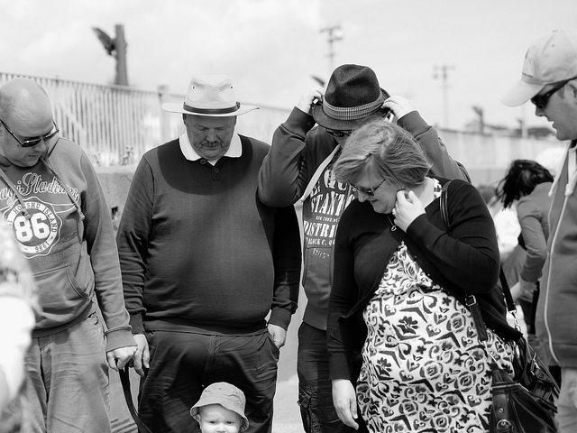

Local Townsfolk Love Our Paper!
Integer vel felis dolor. Vivamus et lectus vitae purus sagittis ultrices. Proin sed leo elit. Donec maximus pulvinar sollicitudin. Aliquam egestas ligula bibendum magna rhoncus, vitae mollis lorem consectetur. Vestibulum faucibus condimentum mauris, tincidunt aliquam felis feugiat non.
Northern Man Enjoys "Spring-Like" Weather
Integer vel felis dolor. Vivamus et lectus vitae purus sagittis ultrices. Proin sed leo elit. Donec maximus pulvinar sollicitudin. Aliquam egestas ligula bibendum magna rhoncus, vitae mollis lorem consectetur. Vestibulum faucibus condimentum mauris, tincidunt aliquam felis feugiat non.
People Gathering About Something Again...
Integer vel felis dolor. Vivamus et lectus vitae purus sagittis ultrices. Proin sed leo elit. Donec maximus pulvinar sollicitudin. Aliquam egestas ligula bibendum magna rhoncus, vitae mollis lorem consectetur. Vestibulum faucibus condimentum mauris, tincidunt aliquam felis feugiat non.